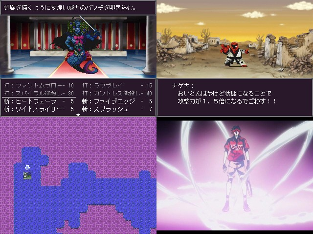

 |
| ◇DL(0.00MB)◇ ◇感想◇ |
| 術者名◇†榊薔薇 楓† |
| 魔具◇RPGツクレナーイ2000 |
| コメント◇ ＊画面は開発途中のものです。 何でも屋を営む主人公が 幽霊屋敷のお嬢様の依頼を受けて 除霊するゲームだよ。 ……幽霊も魔法も一緒なんや！ 左上・右上： 敵とかBGMとか自分で頑張って作りました。 左下： マップチップとかも自作してみたよ！ といってもこれは大マップであって ゲームの大部分は３Dダンジョンで構成されているよ。 右下： 手塚ファントム しまった！ ウリである３Dダンジョン部分のSSがないじゃなイカ！ あとオートマッピングの機能もあるけど スレでうｐしたバージョンでは大不評だったよ。 でも何の手も加えていないよ。 一回大改修してるからもうやりたくないんだよ。 初回DL特典としてオリジナルサウンドトラックのプロダクトコードが封入され ているぞ！ midiのまんま聞いてたほうがマシな出来だ！ ところで青がいらないとか聞きづてならないと思いました。 僕としては全員好きです。 どれとかじゃなくて全部選ぶくらいじゃないと駄目って鴻上会長も言ってました。 でもさやかちゃん最高だと思いました。 結局提出しない可能性が道具の七番目でセレクト押して 戦闘に突入して、戦う選んでもう一回セレクト押すレベルで存在する……？ |
| マスターから◇ …… このコメントのノリから考えて、実は作者がさやかちゃんだろ |